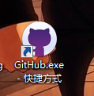

Git入门
-
一．准备工具
-
1.github官网上注册账号https://github.com/
注释：GitHub是英文网站，(对于英语不太好的学员建议可用chrome浏览器右键翻译工具翻译看,但推荐看英文的) -
2.安装github客户端(git免安装包)

*注册和安装完后，github和git都登陆同一账号。
-
1.github官网上注册账号https://github.com/
------->>本·文·完